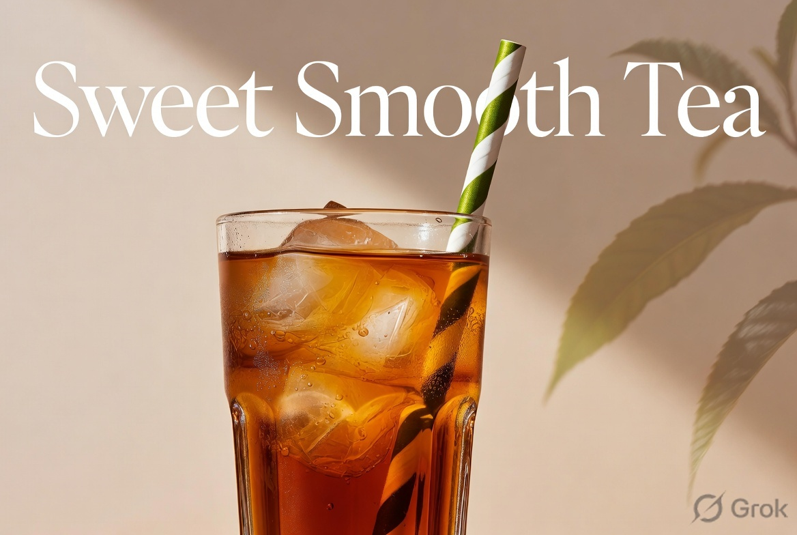

Cool, silky, and perfectly sweetened — this Sweet Smooth Tea is everything you want in a Southern-style iced tea. Made with your favorite black tea and just the right touch of sweetness, it delivers a rich, velvety flavor that’s never overly syrupy.
Brewed hot so the sugar melts perfectly, then chilled until it’s refreshingly crisp, this is the ultimate everyday drink for beating the heat. Pour it over plenty of ice, add a straw, and enjoy that smooth, satisfying sip that feels like a little Southern hospitality in every glass. Whether you’re hosting a backyard gathering or just craving something cool on a lazy afternoon, this easy recipe will quickly become your go-to summer staple.